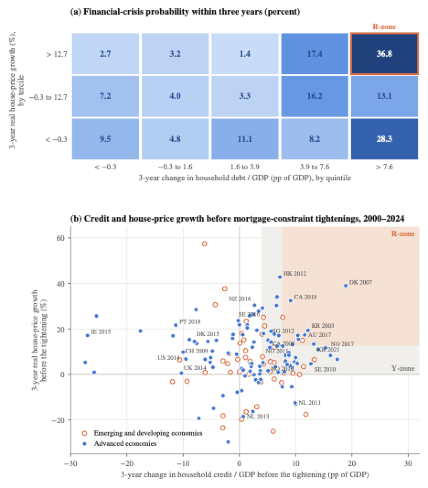

Corrective effects
We now turn to the final term in our organizing equation, term (III), which captures the macro-financial rationale for mortgage constraints. A tightening generates a corrective benefit when it moves the stability-relevant outcomes in , such as credit growth, the composition and servicing burden of debt, and house-price growth, in a direction that lowers the probability or severity of financial distress. In principle, the effect could also be negative, for instance if mortgage constraints deplete households’ liquid buffers. We separate the discussion into three parts. First, we discuss which outcomes matter for financial stability, focusing on the role of credit in particular, in line with the literature. This captures the term in term (III). Second, we consider direct changes in stability-relevant outcomes , including—but not limited to—household credit. Finally, we discuss reduced-form evidence of the full term (III), coming from the GDP-at-risk literature.
6.1What matters for the corrective benefits?
A large literature focuses on the ex ante prediction of financial crises. A central insight from that literature is that credit expansions are one of the most robust predictors of financial crises in long historical panels (Schularick and Taylor 2012). In the postwar period, mortgage lending accounts for much of this relationship (Jordà et al. 2016). Increases in household debt relative to GDP also predict weaker subsequent output growth across countries (Mian et al. 2017).
Panel (a) of Figure 4 illustrates, however, that this relationship is state dependent, using estimates from Greenwood et al. (2022). The cells report the probability that a financial crisis begins within three years for country-years sorted by prior household credit growth and real house-price growth. Crisis probability is 36.8 percent when the three-year change in household debt relative to GDP is in its top quintile and real house-price growth is in its top tercile, the region Greenwood et al. (2022) call the R-zone (“red zone”), against 3.3 percent in the middle cell and roughly 7 percent in country-years where neither credit nor house prices are elevated. In their regression decomposition, unusually high credit growth alone adds about 9 percentage points to the three-year crisis probability and unusually high house-price growth alone adds essentially nothing, but when both are high the probability rises by about 30 percentage points. Risk is therefore particularly high during joint credit and house-price booms.

Notes. Panel (a) reproduces Table 3, Panel D of Greenwood et al. (2022). Each cell reports the probability, in percent, that a financial crisis begins within three years for country-years sorted by the three-year change in household debt relative to GDP and three-year real house-price growth. The sample covers 42 countries from 1950 to 2016; crisis dates are from Baron et al. (2021). The outlined cell is the household R-zone. Cell values are conditional crisis probabilities and should not be interpreted as causal policy effects. Panel (b): each marker represents a tightening episode involving an LTV limit, an income-based limit, or a household loan restriction recorded in the IMF iMaPP database (Alam et al. 2019). Consecutive tightening actions within twelve months are treated as one episode. Positions are measured at the end of the quarter before the first action using the three-year change in credit to households relative to GDP and the three-year change in the BIS real residential property-price index. The shaded regions are the Y-zone and, nested within it, the R-zone, defined using the thresholds in Greenwood et al. (2022). Labels identify selected advanced-economy episodes, including the reforms studied in the household-level literature reviewed in Section 4. Observations from 2020 to 2024 are affected by unusually large movements in nominal GDP.
Other evidence reinforces the interpretation that the impact of credit depends on other economic conditions. The housing booms that end most badly are leveraged booms rather than equity-price booms or housing booms without credit growth (Jordà et al. 2015), and booms financed at compressed spreads are followed by particularly severe outcomes (Krishnamurthy and Muir 2025). Credit growth under stable lending standards contains much less information (Kirti 2018). Not only does the overall credit volume matter, but so does its composition. Credit expansions concentrated in household and non-tradable-sector lending are followed by growth reversals in a way that lending to tradable firms is not (Müller and Verner 2024).
Credit also matters for the macroeconomy once a crisis has occurred. Financial-crisis recessions produce much deeper and more persistent output losses than normal recessions, particularly after credit-intensive expansions (Jordà et al. 2013), and in a broad panel of countries output remains around 7.5 percent below its prior path a decade after a banking crisis (Cerra and Saxena 2008). Credit growth deepens recessions even when no crisis follows: a 10-percentage-point larger three-year rise in credit to GDP before a recession is associated with about 2 percent lower output three years after the peak, with household credit mattering at least as much as corporate credit (Bridges et al. 2017). Romer and Romer (2017) temper this picture somewhat for advanced economies. Using a narrative measure of financial distress for 24 OECD countries from 1967 to 2012, they find that output falls by about 6 percent at the trough and remains roughly 5 percent below its prior path after five years, a persistent but more moderate loss.
The predictive content of credit and the depth of financial crises suggest that curbing credit growth is associated with potentially large corrective benefits. However, given the non-linearity in crisis risk discussed above and especially the importance of housing market conditions, a relevant question for assessing the potential corrective benefits is whether the observed tightenings typically occur while countries are experiencing the combinations of high credit and house-price growth.
Panel (b) of Figure 4 places the 154 tightening episodes recorded in the IMF iMaPP database between 2000 and 2024 and across 38 countries on a “crisis map” using the country’s position in the quarter before the recorded action date. Tightening inside the R-zone is in fact uncommon: only 10 of the 154 episodes occur there, including 8 of the 105 episodes in advanced economies. House-price growth is in the top tercile in 56 episodes, but only 10 of these also have household credit growth in the top quintile, and household debt relative to GDP is falling in 46 episodes.
That most tightenings occur outside the R-zone does not necessarily imply that their corrective benefits are small. Mortgage constraints are preventive and forward-looking, and optimal implementation timing might very well be at intermediate credit and house-price growth levels. That few episodes fall inside the R-zone is thus consistent both with policies rarely being used when historical risk is actually at its highest and with successful preemption. Distinguishing the two requires a credible estimate of the path that credit, debt service, lending standards, and house prices would have followed without intervention, not only the economy’s position at implementation.
As a final point, we note that while the crisis-prediction literature discussed above has focused mainly on credit, the micro literature has increasingly emphasized that financial vulnerability depends not only on the amount of debt, but also on the composition of household balance sheets. Households with substantial housing wealth may remain vulnerable if they hold little liquid wealth or face large required debt payments (Mian et al. 2013; Kaplan et al. 2014). Consistent with this, Ganong and Noel (2020) find that improving borrowers’ short-run liquidity has much larger effects on default and consumption than reducing mortgage principal without lowering current payments. Credit growth and leverage are therefore important indicators of crisis risk, but they do not fully capture households’ financial vulnerability.
6.2Changes in stability-relevant outcomes
The previous subsection highlighted the key role of credit as a crisis predictor, echoing the stated policy objectives. The household-level studies in Section 4 imply a modest decline in aggregate credit growth, while the macro studies reviewed in Section 5 find larger effects. Mortgage constraints also appear to lower house-price growth in markets where the rules bind strongly, although the evidence is less consistent at the national level. These changes move two central predictors of financial crises in the direction of lower risk.
Household-level evidence provides more detail on the composition of the credit response. Much of the reduction in mortgage debt occurs through the extensive margin, as some households delay or abandon a purchase and therefore do not originate a mortgage. Among households that continue to buy, mortgage constraints generally reduce leverage and required debt payments. Both responses should make household balance sheets more resilient to declines in income or house prices. Some continuing buyers, however, meet larger down-payment requirements by drawing down liquid assets. This creates a leverage–liquidity trade-off. The household has less debt but may also have a smaller buffer available when income falls.
Evidence on consumption smoothing illustrates this trade-off. Van Bekkum et al. (2024) find that Dutch homeowners affected by the LTV limit are better able to smooth consumption, as proxied by car ownership, once their liquidity buffers have been rebuilt. Affected Norwegian homeowners instead reduce debit-card spending more following job loss (Aastveit et al. 2026). The difference is consistent with the persistence of the liquidity response. Liquid assets recovered relatively quickly among Dutch buyers but remained lower for at least three years among Norwegian buyers.
The evidence on repayment outcomes points more consistently toward lower vulnerability, although the magnitude varies. DeFusco et al. (2020) calculate that applying the US debt-to-income rule to the whole mortgage market would have lowered the five-year default rate of the 2007 and 2008 cohorts by 0.35 to 0.40 percentage points, small relative to default rates of 24 to 34 percent among loans not repaid early. Van Bekkum et al. (2024) find that Dutch households affected by the LTV limit were 0.8 percentage points less likely to enter arrears, against a baseline rate of 3.3 percent. The effect was concentrated among below-median-income households. Peydró et al. (2024) examine resilience following an aggregate shock. After the Brexit referendum, low-income borrowers in areas more exposed to the UK loan-to-income limit defaulted roughly one-fifth to one-third less often than borrowers in less exposed areas.
Taken together, the evidence suggests that mortgage constraints move most observed components of toward lower financial vulnerability. Credit growth, mortgage originations, leverage, and default risk decline, while house-price growth may also slow in the most exposed markets. Some forces can work in the opposite direction, however. Liquid buffers may fall among households that continue to buy, and lenders may redirect credit toward risks outside the regulated segment.
6.3Reduced-form effects
A small literature estimates the total effect of macroprudential tightening on the distribution of future GDP growth. This is commonly referred to as the “GDP-at-risk” approach. The evidence from the GDP-at-risk literature broadly indicates that macroprudential tightening reduces risks to future growth, but is less conclusive about which instruments provide this protection.
Franta and Gambacorta (2020) find that tighter LTV limits narrow the distribution of future GDP growth by raising its lower tail and lowering its upper tail, without reducing mean growth.1 Brandão-Marques et al. (2020) likewise estimate net benefits from macroprudential tightening and find borrower-based measures particularly beneficial when credit vulnerabilities are high. Using narratively identified shocks in twelve European economies, however, Fernández-Gallardo et al. (2023) find that the statistically significant improvement in the lower tail is driven mainly by lender-based measures. Taken together, the studies support a stabilizing role for macroprudential policy overall, but do not establish that borrower-based measures are consistently the main source of improved growth-at-risk.
6.4What the evidence establishes about term (III)
The crisis literature provides the clearest evidence on the first component of term (III), that is, the impact of stability-relevant variables on financial stability . Rapid household credit growth is a robust predictor of financial distress, particularly when it coincides with rapid house-price growth, and credit-intensive booms are followed by deeper downturns. Other features of household balance sheets have received less attention in the crisis-prediction literature. The available evidence nevertheless suggests that the allocation of debt, required debt payments, lending standards, and household liquidity also matter for how strongly households respond when income or house prices fall.
Mortgage constraints appear to move most of these stability-relevant outcomes in a favorable direction. Aggregate credit growth falls, fewer mortgages are originated, and households that continue to buy generally take on less leverage. House-price growth also declines in some of the markets most exposed to the constraints, and the evidence on arrears and defaults points toward moderately improved resilience. Not every response reduces vulnerability, however. Some continuing buyers draw down liquid assets, and lenders may redirect credit toward other borrowers, regions, or asset classes.
Reduced-form evidence on the full term (III) from the GDP-at-risk literature points in the same direction. Macroprudential tightening tends to improve the lower tail of future GDP growth, although the specific contribution of mortgage constraints is less firmly established. Overall, existing research supports a positive corrective effect, but does not yet provide a quantitative estimate of term (III) for mortgage constraints. Such an estimate would require a causal mapping from each change in to external losses, as well as evidence on how that mapping varies with initial credit growth, house-price growth, and other financial conditions.
Notes
The mean effect is not zero everywhere, however. Using LTV changes in 56 economies, Richter et al. (2019) estimate that a 10-percentage-point reduction in the maximum LTV lowers output by about 1.1 percent over four years, comparable to a 25-basis-point increase in the policy rate. The estimate is imprecise and confined to emerging economies. For advanced economies, the output cost of a tightening is indistinguishable from zero.↩︎